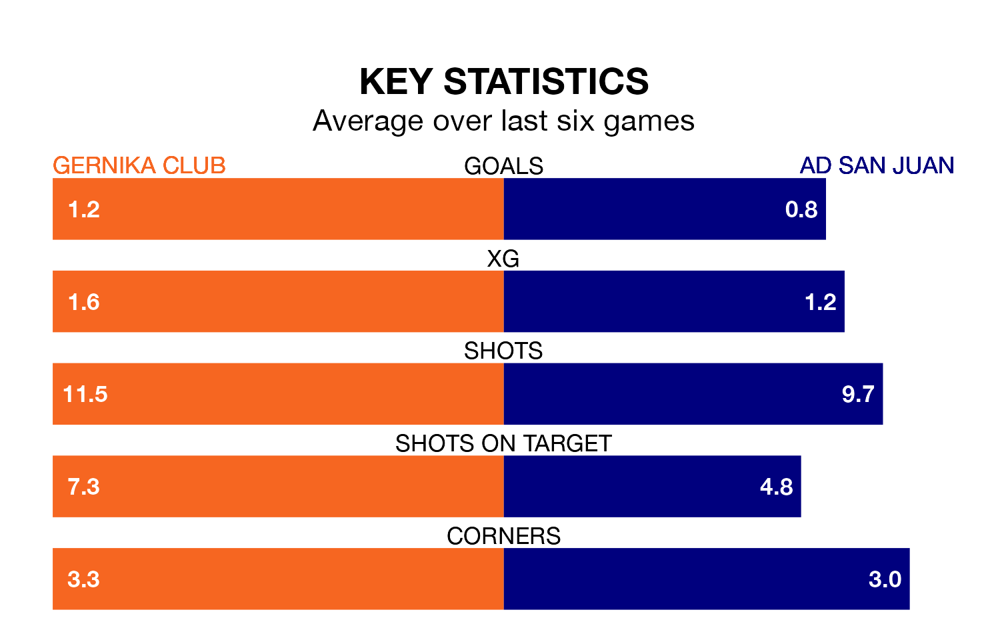

AD San Juan travel to the Estadio Urbieta looking to secure a first win in 11 Segunda División RFEF Group 2 games against Gernika Club on Sunday.
San Juan have lost five and drawn five matches since they last earned three points – against CD Valle Egüés on November 18.
They face a Gernika Club side who have won three and drawn two over that time.
San Juan are 17th in the table after 22 games, of which they have won three and drawn six, earning 15 points.
Gernika Club are six places ahead of the visitors in 11th, with six wins and nine draws putting them on 27 points.
With 15 goals in 22 games so far this season, San Juan are scoring at below the league average rate with 0.7 goals per game. And they are conceding more than average, letting in 39 goals at a rate of 1.8 per game.
The home team, meanwhile, are average scorers, with 1.1 goals per game. They have conceded 1.5 goals per game.
In the last five years, Gernika Club and San Juan have played each other on five occasions. They won one each, and they drew three times.
On average, Gernika Club scored 0.6 goals and San Juan 0.6 in those matches.
Their last meeting was on October 8, when they played out a 0-0 draw.
Gernika Club's last match was on February 10, a 3-0 loss against UD Mutilvera.
San Juan drew 2-2 with Real Sociedad III last time out, also on February 10, with Ander Iriguibel Azkarate and Álejandro Gómez Sanz on the scoresheet.
Updated: 13:04 (UTC), 16/02/24